СКОЛЬКО ТЫСЯЧЕЛЕТИЙ СЛАВЯНСКОЙ ПИСЬМЕННОСТИ
(О результатах дешифровки праславянских письменных памятников)
Г. С. Гриневич
Возникновение письменности у того или иного народа связано исключительно с внутренним историческим развитием общества. Письменность может возникнуть и, как правило, возникает лишь тогда, когда появляется общественная необходимость в ней. Обычно это случается в период создания тем или иным народом собственной государственности с целью развития различных жизненно важных связей: торговых, культурных, дипломатических, как внутри caмoгo государства, так и за его пределами. Бесписьменный народ практически всегда, - автоматически зачисляется в разряд «неисторических» или «примитивных» нapодов.
В этой связи постановка вопроса «была ли у славян своя оригинальная письменность до Кирилла и Мефодия» и положительный ответ на него представляется крайне актуальным и этически оправданным.
* * *
«Прежде убо словени не имexy книг, но чертами и резами чьтеху и гадааху», - говорится в «Сказании о письменах» черноризца Храбра, жившего на рубеже IX-X веков н.э. («Прежде славяне не имели книг, но чертами и резами читали и гадали» - так можно прочесть на современном русском языке эту фразу - прим. ред.)
В современной научной литературе это первоначальное «докирилловское» письмо получило название письма типа «черт и резов» (иногда - «славянских рун»).
О существовании этого письма у славян в докирилловскую эпоху сообщают и другие средневековые авторы.
Арабский путешественник Ибн-Фадлан, предпринявший в 921 году путешествие в Волжскую Болгарию, рассказал о погребении знатного русского воина с надписью на памятнике имени этого воина и имени царя.
В другом сочинении, - арабского автора Х века Эль Массуди есть запись о пророчестве, начертанном на камне, который он обнаружил в одном из «русских храмов».
Персидский историк Фахр ад Дин (начало XIII века) утверждал, что хазарское письмо (речь шла об уже исчезнувшем, но известном Фахр ад Дину, хазарском руническом письме) «...происходит от русского».
Ибн-Фадлан, Эль Массуди и Фахр ад Дин, несомненно, были знакомы с латинскими и греческими буквами; и потому полностью исключается возможность применения для надписей, которые они видели, латинского или греческого письма, хотя бы и несколько перестроенного применительно к фонетике славянской речи. Следовательно, речь шла о самостоятельном славянском письме.
Образцом этого письма ряд советских и болгарских учёных считают надпись, оставленную нам арабским учёным Ибн-эль-Недимом (Рис. 4/2). В труде «Книга росписи наукам», упомянув о наличии у славян в дохристианскую эпоху письменности, он передаёт относящийся к 987 году рассказ посла одного из кавказских князей к князю руссов.. «Мне рассказывал один, на правдивость которого я полагаюсь, - пишет Ибн-эль-Недим, - что один из царей горы Кабк [Кавказ, - Г.Г.] послал его к князю руссов; он утверждал, что они имеют письмена, вырезаемые на дереве. Он же показал мне кусок белого дерева [береста? - Г.Г.], - на котором были изображены, не знаю, были ли они слова или буквы». Вслед за этим сообщением в книге помещалась надпись. Русским учёным эта надпись стала известна в 1836 году.
И ещё одно свидетельство. Немецкий хронист, епископ Tитмар Мерзебургский (976-1018 гг.), посетивший славянский языческий xpaм Ретра, близ города Ней-Стрелица (Сев. Германия), видел там фигуры, на которых «...особыми знаками были начертаны надписи». Корпус этих надписей (свыше 100 надписей, с общим объёмом текста около 2000 знаков) был, издан в конце ХVIII века (Рис. 7/6, 8/3). Но уже в XIX веке нашлись учёные, которые посчитали, что надписи были выполнены германскими рунами «... для бесцельного обозначения языческих божеств на пластических изображениях». Им бы мог возразить и сам Титмар. Будучи человеком грамотным (епископ!); он, надо полагать, мог отличить германские руны от знаков, которые он определили как «особые».
Среди археологических памятников славянской письменности в первую очередь, обычно, называют «алекановскую» надпись.
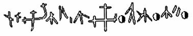
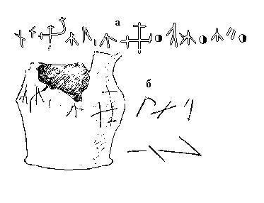
Надпись нанесена на глиняный горшок, найденный осенью 1897 года известным русским археологом В.А. Городцовым при исследовании дюны «Могилок», в окрестностях с. Алеканово, под Рязанью. Алекановская надпись содержит 14 знаков, расположенных в строковой планировке. «Объяснить их как клейма мастера, - писал В.А. Городцов, - невозможно, потому, что знаков много; объяснить, что это знаки или клейма нескольких лиц, также нет возможности. Остаётся одно, более вероятное предположение, что знаки представляют из себя литеры неизвестного письма, а комбинация их выражает какие-нибудь мысли мастера или заказчика. Надпись сделана местным или домашним писцом, то есть славянином».
Близки по форме к «алекановским» и знаки на горшках из бывшего Тверской музея, а также на медных бляхах, найденных при раскопках тверских курганов Х века. На двух бляхах знаки идут по кругу, образуя две одинаковые надписи. Из находок прошлых лет очень интересны надписи на Микоржинских камнях. Они найдены, в Познанской области Польши в 1856 году.
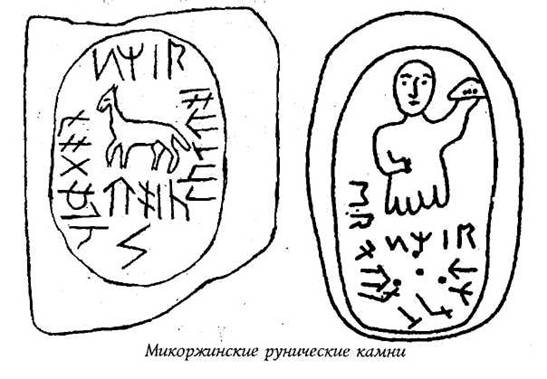
Среди памятников славянской письменности, oткрытыx в нашем столетии, наибольший интерес представляют надписи на пряслицах из Старой Рязани, Лецкан, Гродно; на грузиках Троицкого городища (верховье Москвы-реки); на керамике черняховской культуры (нижнее Поднепровье). Однако, не менее интересны и надписи на двух баклажках, хранящихся в Новочеркасском музее; надпись на каменном нательном крестике из Московского Кремля и надпись на костяном кистене из Рославля, с княжеским знаком Всеволода Ярославича.
Список надписей можно было бы продолжить, но и того, что названо, вполне достаточно для того, чтобы сказать со всей определённостью, что задолго до Кирилла и Мефодия у славян существовала своя оригинальная письменность.
* * *
Надписи, исполненные письмом типа «черт и резов» опубликованы в самых различных, порой труднодоступных изданиях, и потребовались годы, чтобы собрать их в достаточном количестве и приступить к их дешифровке.
Процесс дешифровки любой нерасшифрованной письменности предусматривает, несколько этапов, следующих один за другим в строгой последовательности; Нарушение этой последовательности чревато получением ложных результатов.
Итак, первый этап - формальный анализ. На этом этапе необходимо получить чёткое представление о типе и строе дешифруемой письменности, а также установить направление письма, то есть знать, как следует читать надписи: слева направо или справа налево.
Второй этап - эпиграфический анализ, предполагающий изучение oсобенностей начертания знаков и выявления вариантов одних и тех же знаков с тем, чтобы определить истинное количество разных письменных знаков, которые предстоит озвучивать.
Третий этап - озвучивание знаков. Прохождение этого этапа значительно облегчается, когда имеется «билингва» (параллельный текст, записанный на известном языке известным письмом), или, по крайней мере, - «квазибилингва» (оба текста - на известном и неизвестном языке - совпадают не полностью, а лишь по общему содержанию).
Если нет ни того, ни другого, - можно использовать этимологический метод, метод акрофонии и ряд других методов.
И, наконец, четвёртый этап - чтение текстов, «узнавание языка», на котором они написаны; перевод и толкование содержания текстов.
В нашем случае вопрос о языке надписей решался сам собой, поскольку надписи, принятые к дешифровке, нанесены на предметы, изготовленные славянскими мастерами. Найдены эти предметы на территории расселения восточных и западных славян и датируются IV-X веками, а известно, что ещё «... в IV-X веках славянские языки незначительно отличались друг от друга, не более чем, скажем - говоры современного русского языка». (Хабургаев Г.А. «Старославянский язык». - М., «Просвещение», 1986 г). Поэтому язык надписей, праславянский язык, на котором говорили славяне, составлявшие в прошлом единую общность. Этот язык очень близок к известному всем старославянскому языку.
* * *
Всего в работе по дешифровке письменности типа «черт и резов» было принято около 150 надписей. Надписи содержат от 2÷3 до 25÷30 знаков. Причём, различных линейных знаков, исключая разделительные и ограничительные знаки, знаки веса и рисуночные знаки, среди них встречено 116.
Такое количество знаков, допуская даже значительную их вариантность, (впоследствии подтвердилось, что примерно 35% знаков являются вариантами основных знаков) слишком велико для буквенного и явно недостаточно для словесно-слогового письма. Следовательно, мы имеем дело со слоговой письменностью. О слоговом типе письма свидетельствовал и обнаруженный в ряде надписей знак - косой штpих, стоящий обычно в нижней части строки справа от письменного знака(Рис. 4/1, 2). В индийском слоговом письме «Деванагари» аналогичный знак называется вирамом. «Он ставится у последнего знака слова, показывая, что слово (слог) оканчивается на согласный, а не на гласный» (Кондратов А.М., Шеворошкин В.В «Когда молчат письмена», - М., «Наука», 1970г). В письменности иного типа, в частности, буквенной, в «вираме» просто нет необходимости. Наличие «вирама» предполагало и особый строй письма, а именно - открытый, для которого характерны знаки, передающие лишь oткрытые слоги типа «СГ» (согласный + гласный) и «Г» (чистый гласный). Такой строй письма не допускает сдвоения гласных, а поскольку звуковая структура языка древних славян была всё же сложнее современной, то «вирам», призванный снимать огласовку, создавал слоги типа «ССГ» (СГ + СГ = ССГ), устраняя тем самым «несогласованность» строя письма и строя речи.
Косой штрих - «вирам», стоящий справа от письменного знака, указывал и на направление письма: слева - направо.
В результате проведения эпиграфического анализа все без исключения знаки письменности были разделены на четыре группы: группу линейных знаков, группу рисуночных знаков, группу разделительных и ограничительных знаков и группу прочих знаков. (Рис.1).
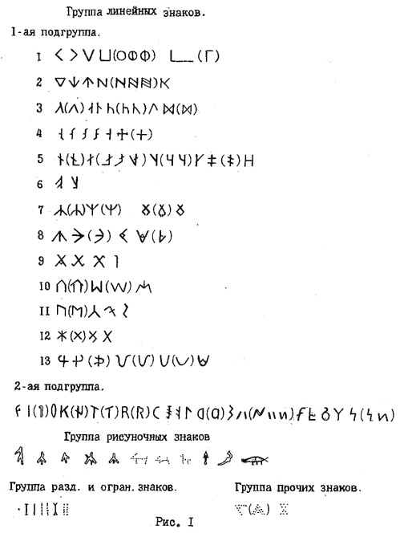
Рис. 1. Эпиграфические группы, подгруппы и ряды знаков письменности типа «черт и резов».
В группу «прочих» вошли знаки, встреченные на грузиках Троицкого городища и определённые как знаки веса (тяжести). Разделительные и ограничительные знаки в виде вертикальных чёрточек, точек, двоеточий, пробелов достаточно традиционны и известны из других письменностей. В этом смысле письмо типа «черт и резов» не было оригинальным.
Группу «рисуночных» знаков составили 10 знаков.
В группу «линейных» знаков вошли 116 знаков. Анализ их конструкции показал, что строение знаков, приведённых к единому масштабу, определяется довольно ограниченным набором стандартных элементов, среди которых наиболее часто встречающимися являются: короткая (типа штриха) и длинная (иначе - «мачта») линии и линия средних размеров; реже - линии в виде крутой дуги и совсем редко, - в виде правильного круга и полукруга. В отношении линий иного типа, в частности, - разномерных плавно изогнутых и линий, изогнутых в виде пологих дуг было замечено, что они представляют собой лишь разновидности (варианты), в первом случае, - соответствующих им по длине прямых линий, а во втором случае - соответствующих комбинаций из двух равновеликих прямых линий, что, в конечном итоге, позволили выделить варианты знаков.
После выделения из общего числа линейных знаков их вариантов, истинное количество разных письменных знаков дешифруемой письменности составило 74. Из этого числа - 56 знаков, распределённые по соответствующих эпиграфическим рядам, составили первую подгруппу рассматриваемой группы, а остальные 18 знаков, не уложившиеся ни в один из этих рядов, составили вторую смешанную подгруппу знаков. Всего в составе первой подгруппы было выделено 13 эпиграфических рядов. Каково же их содержание?
* * *
В основе построения каждого из эпиграфических рядов лежит обычный комбинационный принцип (им, надо полагать, руководствовался древний Автор, создатель этой письменности), позволяющий различать как знаки целых рядов, таки отдельные знаки в пределах ряда. Иными словами, различия между эпиграфическими рядами определяются набором тех или иных стандартных элементов, их количеством, либо, при равном количестве, - иным планом их расположения, а различия знаков в пределах ряда, за редким исключением, - лишь планом расположения одного и того же количества стандартных элементов. Например: при построении 1-го и 2-го эпиграфических рядов использовались одни и те же стандартные элементы (линия средних размеров), но в разных количествах, а при построении 13-го ряда - иные стандартные элементы, в частности - характерная только для этого ряда крутая дуга.
Само собой разумеется, что выделение эпиграфических рядов было не случайным. Зная, что наши предки использовали на письме знаки, обозначающие лишь открытые слоги, содержание этих рядов было очевидным: знаки, их составляющие, должны обозначать слоги, начинающиеся на один и тот же «согласный» например, ВА, ВЕ, ВИ, ВО, ВУ; или: КА, КЕ, КИ, КО, КУ и т.д. При озвучивании, эти ряды могли оказаться очень эффективными. Ведь совершенно очевидно, что озвучив лишь один знак какого-либо эпиграфического ряда, мы сразу получали фонетическое значение остальных знаков этого ряда, правда, без огласовки.
Никто не знает, какую азбуку изобрел Кирилл, - кириллицу или глаголицу (по этому вопросу до настоящего времени ведутся острые дискуссии), и вообще, создал ли он одну из этих азбук или только усовершенствовал, упорядочил славянскую письменность, существовавшую задолго до него. По крайней мере, в одном из посланий Папы Иоанна VIII недвусмысленно говорится о том, что «славянские письмена» были известны до Кирилла и он их «... только вновь нашёл, вновь открыл». Из сказанного следует, что при создании кириллицы (или глаголицы) Кирилл заимствовал знаки из какого-то письма, надо полагать, письма типа «черт и резов». Действительно, при сопоставлении кириллицы и глаголицы со знаками письменности «черт и резов» было выявлено 23, совпадающих по форме с буквами славянских азбук. (Рис.2).
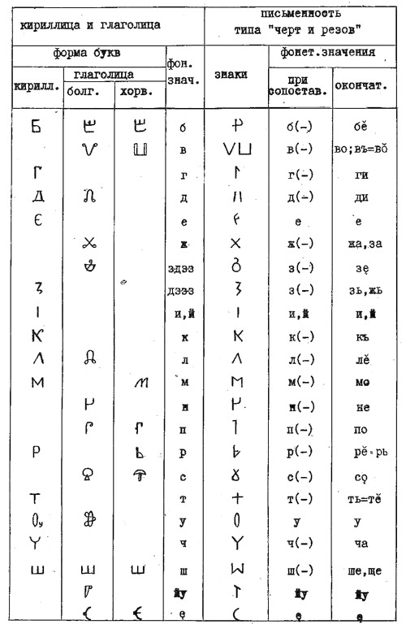
Рис. 2. Знаки письменности типа «черт и резов» в сравнении с кириллицей и глаголицей.
Знаки письменности, идентичные в графическом отношении буквам славянских азбук, получили фонетическое значение последних (этимологический метод озвучивания). При этом 5 знаков из смешанной подгруппы были озвучены как «ЙУ» и как гласные Е, И, У, Ę («е» - носовое), а ещё 5 знаков из этой же подгруппы получили фонетическое значение без огласовки. Фонетическое значение без огласовки получили остальные 13 знаков, распределённые по всем (кроме 6-го) эпиграфическим рядам, каждый из этих знаков определил звучание (без огласовки) остальных слоговых знаков своего ряда. Иными словами, стало известно, что знаки 1-го эпиграфического ряда обозначают слоги на В (-), (5 знаков), знаки 2-го ряда - слоги на К (-), (5 знаков) и т.д. Всего, после применения этимологического метода, фонетическое значение получили 64 знака, в том числе - 59 знаков без огласовки.
При озвучивании знаков дешифруемой письменности был использован и метод акрофонии. Это достаточно простой и распространённый метод. Суть его состоит в том, что исследователь отождествляет рисуночный знак с тем предметом, который он изображает и берёт для чтения, - из названия этого предмета, первую букву или первый слог (в зависимости от типа письма). Применяя этот метод были озвучены рисуночные знаки, изображающие КОпьё, ЧЕ(ЦЕ)ловека, СОхатого, ВĔпря, ЛОшадь, ЗАйца, РЫсь, СО(СЪ)кола, САбаку(собаку).(рис.3). Этот же метод был применён и при озвучивании ряда линейных знаков, представляющих из себя схематическое изображение указанных предметов, человека и животных. Так, знак, сопоставимый с рисунком «лошади» на грузике из Троицкого городища, получил то же фонетическое значение - ЛО; знак ↑, сопоставимый со знаком, изображающим «копьё», - фонетическое значение КО и т.д. (Рис.3).
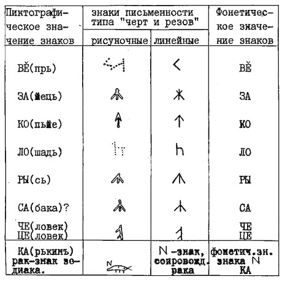
Рис. 3. Сопоставление рисуночных знаков и линейных знаков письменности типа «черт и резов».
В результате применения метода акрофонии получили фонетическое значение 10 рисуночных и 8 линейных, а два знака 6-го эпиграфического ряда - фонетическое значение без огласовки.
Всего же после применения двух названных выше методов озвучивания, из 74-х линейных знаков (помимо 10-ти рисуночных) для 13-ти были получены фонетические значения, а ещё для 53-х - фонетические значения без огласовки. Такого количества озвученных знаков (в их число вошли все наиболее часто встречающиеся знаки) оказалось достаточно, чтобы приступить к чтению надписей. Причём, в процессе чтения, от надписи к надписи, шло нарастание числа знаков с окончательным фонетическим значением. Так, надпись на шахматной фигурке с Темировского поселения в рабочем варианте выглядела следующим образом: КО Н(-) - второй слог без огласовки, но смысл надписи ясен - КОНЬ; следовательно, окончательное фонетическое значение второго знака - НЬ. (Рис.4/5).
Слог вставал к слогу, образуя слова; и, слово за словом, - прояснялось содержание некогда «загадочных» надписей; и вот уже никакой тайны; и мы узнаём, что на горшке из Алеканова надпись содержит практический совет хозяйке горшка: НАДǑБĔ ЗАКРЫТЬ ВЪ ЧЕЛО ВЪСАДИВЪ*, (Рис.4/1). - «Надо закрыть, в чело посадив (поставив)», («чело» - наружное отверстие русской печи); что костяной предмет (кистень) из Рославля с княжеским знаком Всеволода Ярославича, действительно принадлежал Всеволоду - ВЪСЕВОЛОЖЕВЬ, (Рис.4/4); что в горшке из п. Огурцово хранилось лекарство - ЛĔКА, (Рис. 6/5), а в другом, - «черняховском» горшке - какое именно лекарство: ЛĔВИ ЛОИ («львиное» сало, Pиc. 6/4); что на грузиках Троицкого городища указан их вес: ВĔСО 4 ЛОТА **), ВĔСО 4 УНИКИ (унции)**), ВĔСО КQПЬНО**) 2 унции («Весит в совокупности 2 унции»), причём, действительный вес этих грузиков, по данным археологов, их открывших, равен, соответственно: 51, 104, 52 грамма**).
*) При переводе использовались: «Этимологический словарь славянских языков (праславянский лексический фонд)», под ред. О.Н. Трубачёва, 1974-1987 гг., «Словарь церковно-славянского языка», Т. I - II, СПб, .1856-1861гг. А.Х. Востокова, «Материалы для словаря древнерусского языка по письменным памятникам», Т.1-3. - СПб, 1893, 1895, 1903 гг. И.И. Срезневского.
**) ЛОТЪ - древняя русская мера веса = 12,797 гр.; унция = 25,6 гр. КОПЬНО - О («о».. носовое); впоследствие, при утрате носовых, на месте «о» стали произносить «у» - КУПЬНО.
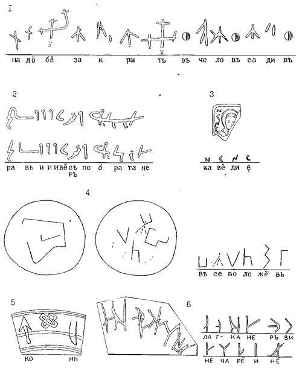
Рис. 4. (1) - Алекановская надпись, IX-X вв.; (2) - Недимовская надпись, 986г.; (3) - надпись на иконке с городища у д. Слободка, на Навле, IX-X вв.; (4) - надпись на кистене из Рославля (найден в слое XIII века); (5) - надпись на шахматной фигурке с Темировского поселения, X в.; (6) - надпись на керамике из Белой Вежи, IX в.
Баклажки из Новочеркасского музея, представляющие из себя уплощённый цилиндр с двумя ручками, за которые они подвешивались к седлу, предназначались для хранения в дороге кумыса или вина. Поэтому содержание надписей на них находятся в соответствии с их назначением: (перевод с праславянского) «Чтобы тебе еда не была как вода, весу (местное название баклажки) за два бока ты только взявши, пей это (то, что в баклажке)» - написано на одной баклажке, а на другой (перевод): «Помыслы в вере, веселье в вещеле (ещё одно местное название баклажки от слова «подвешивать») этой будет». (Рис.5).
В отношении «недимовской надписи» историки предполагают, что она, нанесенная на «белую дощечку», представляла собой «охранную грамоту», своего рода посольский документ, и это действительно так, поскольку её содержание таково: РАВЬИ И ИВĔ (СЪ или РЪ) (Два мужских имени? Или русские и грузины) ПОБРАТАНЕ, (то есть союзники, братья), (Рис. 4/2).
Справа от знака, обозначающего слог БА стоит косой штрих «вирам», снимающий огласовку; знак с «вирамом» читается, как одиночный согласный «Б». Существует мнение историков о том, что известный княжеский знак «трезубец» выражает понятие: царь, герой, Бог. Трезубец представляет собой лигатуру, то есть совместное написание двух письменных знаков, которые читаются как И («и» - личное местоимение мужского рода - «он») - БО (Бог), - «Он Бог».
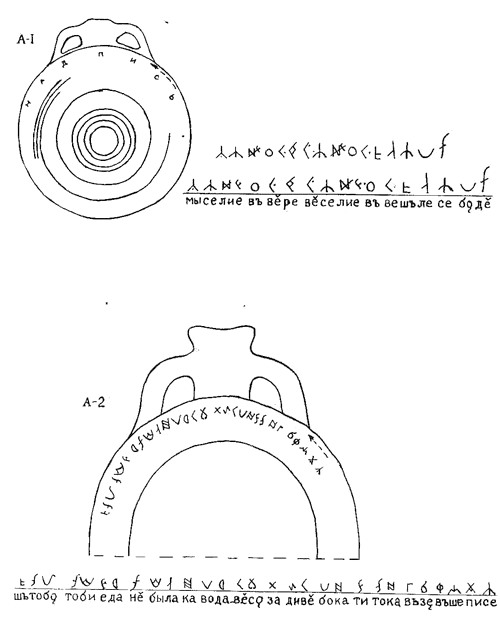
Рис. 5. Восточнославянские надписи. А∙1 - Новочеркасская баклажка. А∙2 - Кривянская баклажка (IX-X вв.).
На «микоржи́нском» камне изображён человек с поднятой вверх левой рукой, в которой зажат камень треугольной формы; надпись, сопровождающая изображение созвездия Тельца (четыре точки - звезды; три - образующие треугольник, четвёртая - в центре этого треугольника), - гласит: (перевод) «Мой знак Телец». (Рис. ,7/1, 2, 3). На груди металлической фигурки из храма Ретры, точно такой же, как и на упомянутом «Микоржинском камне», дано изображения созвездия Геркулеса и Змееносца, которые на карте звёздного неба располагаются как бы на весах (созвездие Весы). Надпись, процарапанная на спине фигурки, подтверждает это (перевод): «Мой знак на Весах указан. Я жажду чуда», (Рис. 7/4,5,6).
В давние времена пряжа прялась из кудели при помощи веретена. На веретено, для ускорения вращения, надевали керамическое или каменное колечко - пряслице («ре́́шек»). Пряли, собравшись в одной избе; и при разборе веретён и пряслиц из «большой кучи каждая пряха стремились найти своё пряслице, с которым она привыкла работать, и потому пряхи старались отличать пряслица, подписывая их. ВЕРЪТАТЕ КАШЕВИ - «Возвратите Кашеви», - просит пряха по имени Каше́ва (от слова «каша»?), жившая когда-то в Старой Рязани. (Рис. 6/1). На пряслице из Гродно написано чьё оно: РĔШĔК ДИНОЧИ - «Решек (пряслице) Диночи» (женское имя Дина). (Рис. 6/2) Пряха из Лецкан уместила на пряслице целых две строки: СQСЕДИ МQИ. РЕШĔК ЦЕ ВОЗЪНĔ СQЛИ - «Соседи мои. Решек (пряслице) этот (однако) возвратите? Соли» (Со́ля - древнее русское женское имя). (Рис. 6/3).
Надпись, выложенная камнем на полу Софийского собора в Константинополе велит (перевод): «Гни до полу поясницу...». А о чём поведает потаённая «ситская надпись» из Родопских гор (Болгария), - нам ещё предстоит узнать.
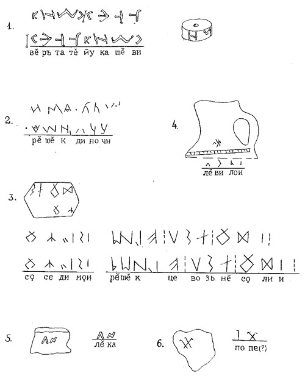
Рис. 6. Восточнославянские надписи. Пряслица: (1) - из Ст. Рязани (X в.); (2) - из Гродно (IX в.); (3) - из Лецкан (IV в.). Керамика черняховской культуры: (4) - из Раду-Негро (V - VI вв.); (5) - из Огурцово (VII в.); (6) - из Лепесовки (VI в.).
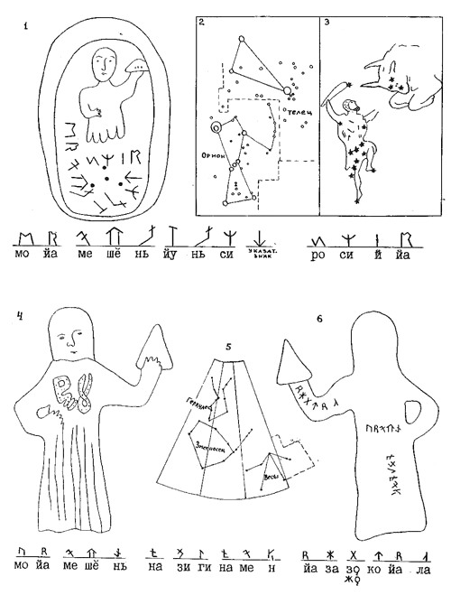
Рис. 7. (1) - Микоржинский камень № 1. (2) - карта звёздного неба (фрагмент). (3) - фрагмент старинной карты звёздного неба с изображением Ориона и Тельца. (4,6) - фигурка из храма Ретры (4 - вид спереди, 6 - вид со спины с надписью). (5) - карта звёздного неба (фрагмент).
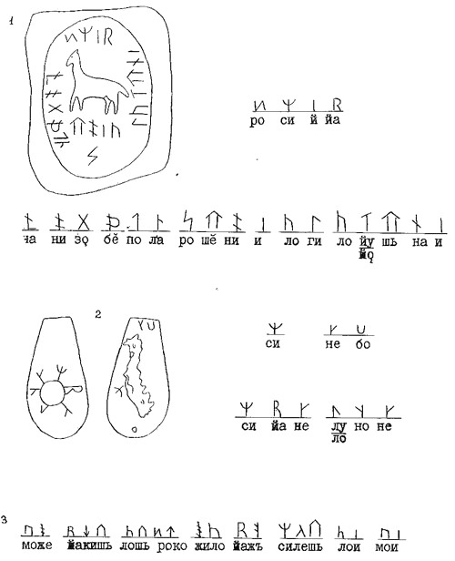
Рис. 8. Западнославянские надписи. (1) - Микоржинский камень № 2, с лошадкой. (2) - Микоржинский камень № 3, с облаком. (3) - надпись на фигурке идола из храма Ретры (Е. Классен).
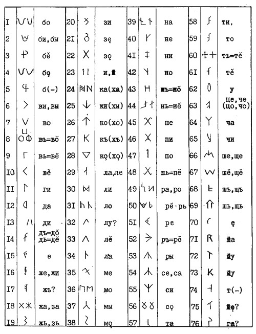
Рис. 9. Линейные знаки письменности типа «черт и резов».
Надписи, исполненные письмом типа «черт и резов», о которых рассказано выше, датируются в пределах временного интервала, охватывающего IV-X век н.э. Самая древняя из них - надпись на пряслице из Лецкан, - 348 год.
То обстоятельство, что самая древняя надпись, исполненная письмом типа «черт и резов» делана простой деревенской пряхой, - Да будет славно её имя, - Соля! - наводило на мысль о ещё более глубокой древности славянской первописьменности. Однако славянская археология не просматривает археологические следы славянских культур глубже I - II веков н.э. Действительно, никаких следов на протяжении почти двух тысяч лет. А глубже - ?..
Глубже, а точнее - в начале тpeтьего тысячелетия до н.э., свидетельствуют археологи, - в нижнем Поднепровье-Подунавье сложилось крупное (славяноязычное - по А.Я. Брюсову) этническое единство, создавшее так называемую «трипольскую» культуру. По единодушному мнению специалистов, «...трипольцы в культурном отношении значительно превышали своих соседей». Имели они и письменность. Пространных текстов или хотя бы отдельных трипольских надписей пока не найдено, но отдельные знаки, имеющие абсолютное сходство со знаками письменности «черт и резов» имеют место на обломках трипольской керамики. Более того, предтечей трипольской культуры в Подунавье являлась культура Винча-Турдаш, с которой связаны древнейшие на Земле письменные памятники, в частности - знаменитые таблички из местечка Тэртерия (Румыния). Но о них несколько позже.
Сейчас для нас важно ответить на вопрос: почему возник и существует такой огромный разрыв во времени между трипольской культурой и гораздо более поздними славянскими культурами этих мест, той же черняховской (именно с ней связана надпись на пряслице из Лецкан)?
* * *
В начале второго тысячелетия до нашей эры произошло внезапное прекращение развития трипольской культуры, носившее катастрофический характер: трипольцы покидали свои дома, оставляя массу вещей и даже домашних идолов. Время исхода трипольцев точно согласуется со временем появления на Балканах, в догреческой Греции, На островах Эгейского моря и, в том числе, на Крите - ПЕЛАСГОВ, с чьим именем обычно связывают расцвет и могущество Критской державы. Владели пеласги и письменностью, которая среди письменностей Мира занимает особое место, образуя тип силлабария, именуемый «эгейским». Для этой письменности, в отличие от прочих систем, характерны знаки, передающие лишь открытые слоги типа «СГ» (согласный + гласный) и «Г» (чистый гласный). Кроме того, здесь имеет место «вирам» и, наряду с линейными, присутствуют рисуночные знаки. Все эти особенности, как мы уже выяснили, были присущи и письму типа «черт и резов», что и позволило считать эти письменности родственными. Но главное состояло в том, что подавляющее число линейных знаков критских надписей*) в графическом смысле оказались идентичными знакам письменности «черт и резов».
Воспользовавшись этим обстоятельством, им (критским знакам) были присвоены фонетические значения последних (этимологический метод дешифровки) и критские тексты «заговорили» ... на языке, очень близком к старославянскому:
НЕ ДО СЕБЕ И ЧАСО (су) Д(Л)А (для)**) ЙЕ ТЕНИ (Тень - черта, знамя бортное у восточных славян) ЖИВЬЕ -
«Не дай (не давай?) себе и часу для её знамени (славы) живя». (Рис.10/К.-87).
Или: ТОЧЬЧА РЪЖА БЕ ВЪ ТОБЕ: СИЛО (лу): ПОМ(Л)ОДИЛО МА(МУ?) ДОРА (?) ТОЙЕ Е ТА НИВЪТЪ Д(Л)Е (для) НЪЖИ; (по глаголу «низать, нижу» - нанизывать, то есть собирать воедино, на одну нить) -
«Точит ржа бывшую в тебе силу. (А) это есть та нить, что связывает нас». (Рис.. 10/К. и Ш. - 17).
Приведённые тексты исполнены линейным письмом класса «А», а большинство прочитанных текстов выполнены линейным письмом класса «Б», посвящено описанию аномальных явлений в атмосфере. Вот один пример такого описания:
АВЕТИ ЕНИ ЕСИНИ (ясини) ЖЕГ А Е ГАРЕ ЙЕКЫ (якы) ИЕ Е ЕС(Т) И ИЕ СИ БАИ: ТО И ТЕЗЬИ ЕСИНИ (ясини) ЖЕ ТО ХЫТЪРОИ ЖЕ ТЕЗЬИ К(Р)ЫЛО И -
«Явились они. Ясным жаром (пламенем). Оно Горело, как Ие. Оно и есть Ие. Это говорят: то его подобия ясные же, то - искусственные же подобия, то - крыло Его». (Рис.11/Д - 75).
Текст сопровождают рисунки «аппаратов»(?), похожих на современный вертолёт.
«Ие» - это, вероятно, имя божества. Сравните: Иегова - Бог (др. евр.), - заимствованное у праславян словосочетание ИЕ ГО(Л)ВА - «голова ИЕ».
*) Надписи исполнены так называемым линейным письмом класса «А» (XVII-XV века до нашей эры), линейным письмом класса «Б» (XV-XIII вв. до н.э.); письмо Фестского диска (XVII в. до н.э.).
**) Строй праславянского письма не допускал сдвоения согласных, а поскольку звуковая структура языка древних славян была всё же несколько сложнее, то «несогласованность» строя письма и строя речи (помимо «вирама») устранялась «потерей» при письме одного из сдвоенных согласных, обычно, второго, чаще - сонорного - М, Н, Р, Л.
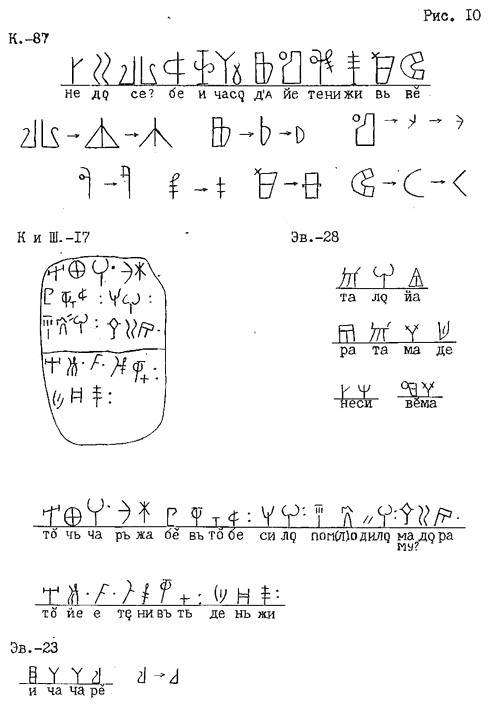
Рис. 10. Критские надписи, выполненные линейным письмом «А». К.-87; К и Ш.-17 - глиняные таблички с линейным письмом «А». Эв.-28 - группа имён (по Эвансу). Эв.-23 - надпись на чаше (по А. Эвансу).
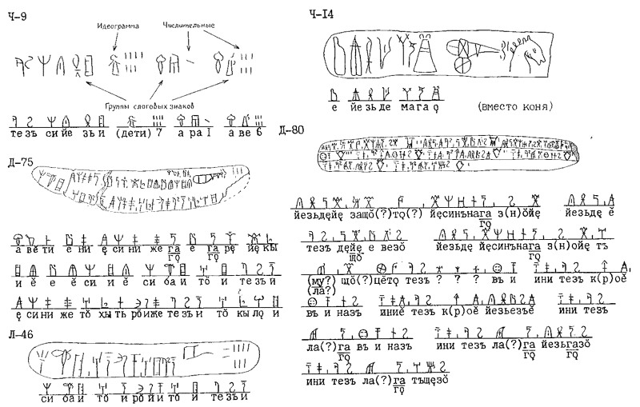
Рис. 11. Критские надписи, выполненные линейным письмом «Б».
Ч-9 - Табличка А-а-62 из Пилоса. Показана структура текста. Ч-14 - Табличка с колесницей (Кносс), (Sc 230). Д-75 - Табличка «боевой колесницы» из Кносса. Д-80 - Инвентарная табличка из Пилоса. Л-46 - Табличка с колесницей.
* * *
Из других критских текстов наибольший интерес представляет текст Фестского диска, - как наиболее пространный. (Рис.12, 13). Диск знаменит ещё и тем, что он является древнейшей штамповaнной надписью!
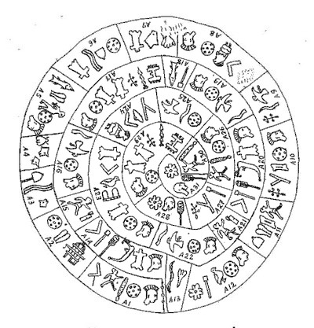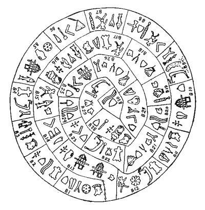
Рис. 12. Фестский диск (прорисовка): сторона «А» (слева) и сторона «В» (справа).
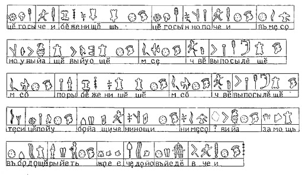
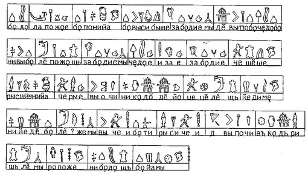
Рис. 13. Текст Фестского диска в строковой планировке: сторона «А» (сверху), сторона «В» (снизу)
Диск изготовлен из хорошо обожжённой глины. С обеих сторон его покрывает спирально идущая надпись, составленная из аккуратно отштампованных знаков.
Поперечными чёрточками надпись разделена на отдельные «поля», в каждом из которых от двух до шести знаков. Весь текст диска (с двух сторон «сторона А» и «сторона Б») состоит из 241-го знака. При таком объёме текста, если работать лишь с одним Фестским диском, расшифровать его невозможно (для силлабариев подобного типа, каким является письмо Фестского диска, и, в целом, праславянская письменность, минимальный обьем текста, при котором возможно одно, единственное решение, равно 300÷500 знаков). Но в нашем случае, надпись на Фестском диске - это лишь одна из многих надписей единой праславянской письменности, которая вместе с другими надписями, выполненными этой письменностью, составила суммарный текст более чем достаточный для однозначной дешифровки.
Ниже приводится текст Фестского диска в переводе с праславянского языка на современный русский язык.
Сторона А:
ГОРЕСТИ ПРОШЛЫЕ НЕ СОЧТЁШЬ, ОДНАКО ГОРЕСТИ НЫНЕШНИЕ ГОРШЕ. НА НОВОМ МЕСТЕ ВЫ ПОЧУВСТВУЕТЕ ИХ. ЧТО ВАМ ПОСЛАЛ ЕЩЁ БОГ (?) МЕСТО В МИРЕ БОЖЬЕМ. РАСПРИ ПРОШЛЫЕ НЕ СЧИТАЙТЕ ЧТО ВАМ ПОСЛАЛ БОГ, ОБСТУПИТЕ ТЕСНЫМИ РЯДАМИ. ЗАЩИЩАЙТЕ ЕГО ДНЁМ И НОЧЬЮ. НЕ МЕСТО - ВОЛЮ. ЖИВЫ ЕЩЁ ЧАДА ЕЁ, ВЕДАЯ, ЧЬИ ОНИ В ЭТОМ МИРЕ.
Сторона Б:
БУДЕМ ОПЯТЬ ЖИТЬ, БУДЕТ ПОКЛОНЕНИЕ БОГУ, БУДЕТ ВСЁ В ПРОШЛОМ - ЗАБУДЕМ, КТО МЫ ЕСТЬ. ГДЕ ВЫ БУДЕТЕ, ЧАДА БУДУТ, НИВЫ БУДУТ, ХОРОШАЯ ЖИЗНЬ - ЗАБУДЕМ, КТО МЫ ЕСТЬ. ЧАДА ЕСТЬ - УЗЫ ЕСТЬ, - ЗАБУДЕМ, КТО ЕСТЬ. ЧТО СЧИТАТЬ, ГОСПОДИ! РЫСИЮНИЯ ЧАРУЕТ ОЧИ. НИКУДА ОТ НЕЁ НЕ ДЕНЕШЬСЯ, НЕ ИЗЛЕЧИШЬСЯ ОТ НЕЁ. НИ ОДНАЖДЫ БУДЕТ, УСЛЫШИМ МЫ: ВЫ ЧЬИ БУДЕТЕ, РЫСИЧИ, ЧТО ДЛЯ ВАС ПОЧЕСТИ, В КУДРЯХ ШЛЕМЫ, РАЗГОВОРЫ О ВАС. НЕ ЕСТЬ ЕЩЁ, БУДЕМ ЕЩЁ МЫ.
Из текста Фестского диска следует, что славянское племя ры́сичей вынуждено было оставить свою родину - Рысию́нию. Новую родину оно обрело на Крите. Нaзвание «ры́сичи» скорее всего, связано с принадлежностью к племени Рыси (тотем наших пращуров - Рысь. Лингвистам известен этимологический ряд слов: роса-русый-рыжий-ржавый-рудый-рысь).
И это свидетельствует о том, что на Крит наши предки пришли с Севера, надо полагать, из Поднепровья. Трагизм событий, пережитых рысичами, перекликается с судьбой трипольцев; и это даёт нам основание считать, что Рысичи - пеласги (так называли их пришельцы, - греки) это славянское племя, обитавшее в Поднепровье в третьем - втором тысячелетии до нашей эры.
Выше уже, говорилось, что трипольцы являлись наследниками культуры Винча-Турдаш, с которой связаны древнейшие на нашей планете письменные памятники и в частности, глиняная табличка, найденная в 60-ые годы близ румынского посёлка Тэртерия. Возраст памятника по данным радиоуглеродного метода составляет 7 тысяч лет. Табличка, имеет круглую форму. Вертикальной и горизонтальной линиями поле таблички поделено на четыре части. В каждой из них от двух до пяти знаков, но два знака в третьей по счёту (против часовой стрелки) полустёрты; и вряд ли их когда удастся восстановить.
Тэртерийские знаки в графическом отношении абсолютно идентичны знакам праславянской письменности, фонетическое значение которых было установлено при чтении надписей, исполненных письмом типа «черт и резов», этрусских, критских и протоиндийских надписей (Рис.14/ лист 1, 2, 3, 4); и потому чтение тэртерийской надписи не составило большого труда: РОБЕ ЕТЬ (ять) ВЫ ВИНЫ [...] Д´АРЬЖИ ОБЪ.
Перевести этот текст может любой, знающий славянские языки, даже не заглядывая в словарь. Ведь РОБЕ - это «робята, ребята» - «дети» и ЕТЬ (ять) - форма глагола «яти, иму» - «взять, брать»; и местоимение ВЫ - «вас», то есть «ваши» (вспомните знаменитое славянское «Иду на Вы»). Можно догадаться, что слово ОБЪ обозначает «около, рядом» («объедки», - то, что рядом с едой; «объезд» - рядом, около проезда и т.д.) и ВИНЫ - «вина», это то, в чём мы провинились, грешны. Так что перевод текста, написанного нашим предком в пятом тысячелетии до н. э: звучит просто и понятно:
«ДЕТИ ПРИМУТ ВАШИ ГРЕХИ ... ДЕРЖИТЕСЬ ОКОЛО (держитесь детей своих)».
А общий вывод по результатам дешифровки праславянской письменности, - в целом и, чтения тэртерийской надписи, - в частности, также прост и понятен: праславянская письменность является первописьменностью людей, жившиx на нашей Планете.
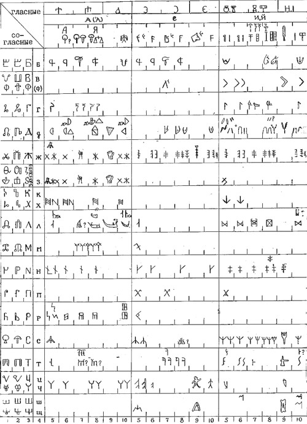
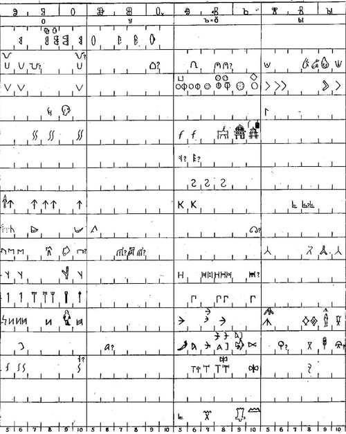
Рис 14-1. Сводная таблица знаков праславянской письменности (лист 1 и лист 2).
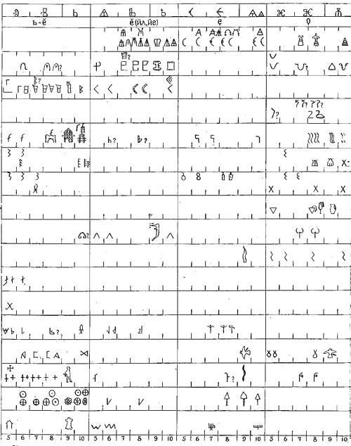
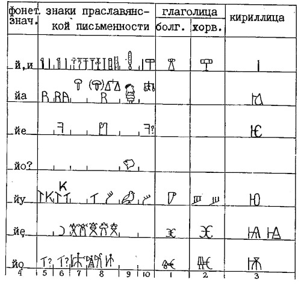
Рис. 14-2. Сводная таблица знаков праславянской письменности (лист 3 и лист 4).
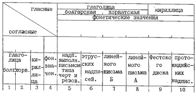
Рис. 14-3. Схема расположения букв славянских азбук и знаков праславянской письменности по разновременным надписям Сводной таблицы, Рис. 14-1... 14-3.
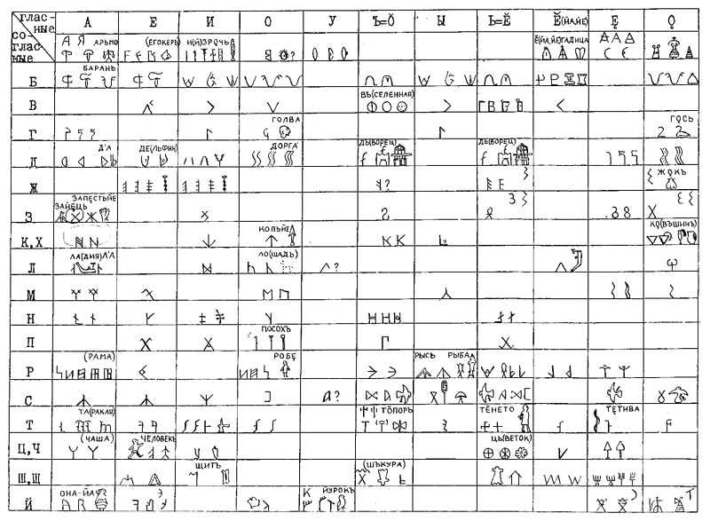
Рис. 15. Слоговые знаки праславянской письменности.
* * *
Примечание
Самое авторитетное суждение не может утвердить или опровергнуть результаты любой дешифровки. Единственный способ проверки этих результатов - чтение надписей, не использованных автором дешифровки.
Пользуясь «Сводной таблицей знаков праславянской письменности» (Рис.14 / лист 1, 2,3,4), или более компактной таблицей «Слоговые знаки праславянской письменности (Рис.15), любой из читателей может выполнить эту проверку.
А поскольку общее количество протоиндийских, критских, этрусских надписей, исполненных так называемым письмом типа «черт и резов», составляет несколько десятком тысяч, то у проверяющих есть все возможности подтвердить или опровергнуть результаты дешифровки праславянской письменности.
Гриневич Геннадий Станиславович
Москва, 11 апреля 1991 года.
Опубликовано: журнал «Русская Мысль», 1991, № 1-12, стр. 3-28.
Международное общественное объединение
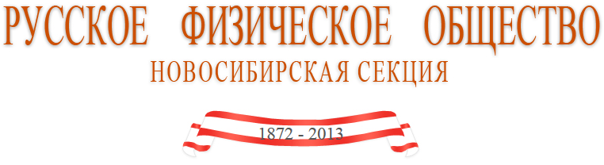
Russian Physical Society, International
Ссылка: http://nsks.rusphysics.ru/files/Grinevich.Skolyko%20tysyacheletiy.rar